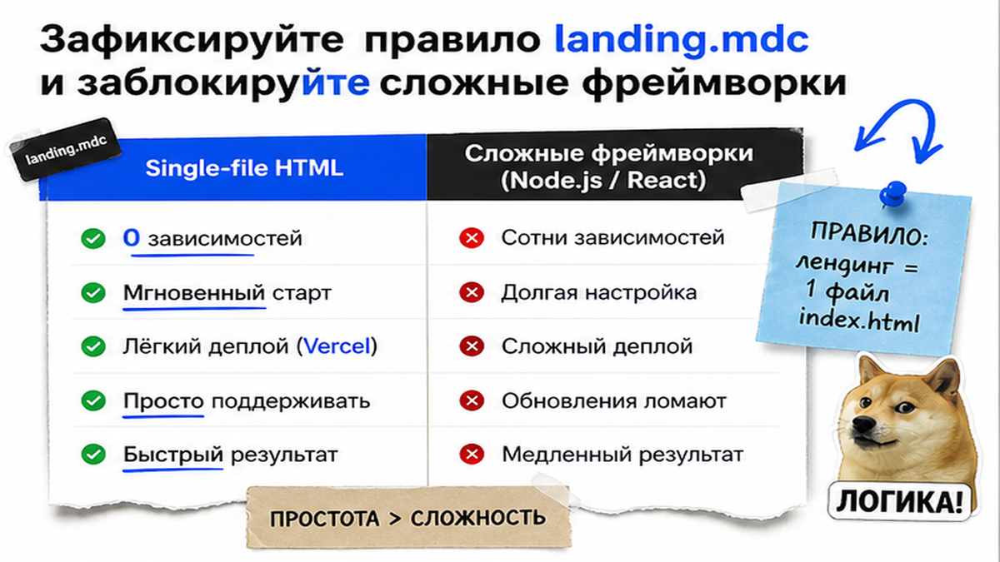
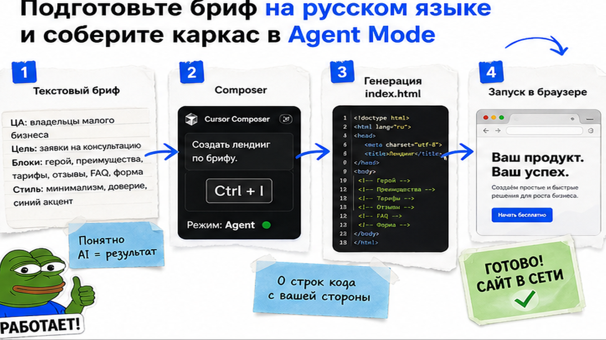
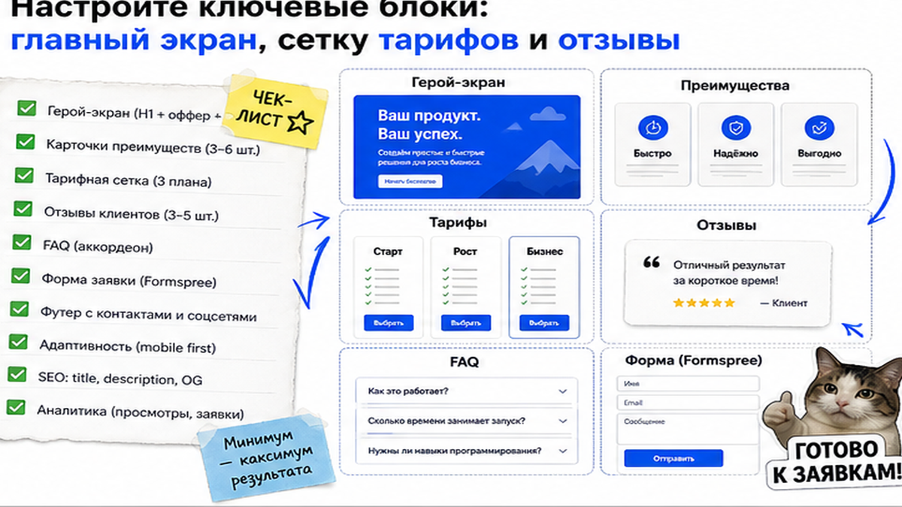

Предприниматель решает собрать лендинг для новой услуги в Cursor AI. Он открывает чат, пишет "создай лендинг юридических услуг", а нейросеть создает 15 файлов на Next.js и просит запустить команду в консоли. У человека нет Node.js, терминал выдает ошибку "npm not recognized", а вечер испорчен. Ниже – практическое руководство, как создать сайт с помощью нейросети Cursor AI без единой строчки ручного кода. Вы соберете адаптивный одностраничник в одном файле index.html, подключите бесплатную форму сбора заявок и опубликуете проект в сети за 30 минут.
Суть методики простыми словами: мы настраиваем Cursor AI на сборку всего сайта в единственный файл index.html и подключаем стили через интернет по технологии Tailwind CDN. Это полностью исключает возню с терминалом, установку Node.js и ошибки сборки. Форма сбора заявок отправляет контакты клиентов на почту или в Telegram через бесплатный шлюз Formspree. Публикация на хостинге Vercel Drop выполняется перетаскиванием папки из проводника за 60 секунд.
Создание сайта с помощью нейросети в 2026 году перестало требовать навыков программирования или бюджета на веб-студию. По данным статистики Яндекс Вордстат на август 2026 года, поисковый интерес к фразам "cursor ai" (11 852 показа в месяц) и "создать сайт с помощью нейросети" (свыше 3 000 целевых запросов) растет быстрее классических платформ. При этом Cursor AI способен создавать полноценные интерактивные сайты в одном файле index.html с анимациями и адаптивным дизайном через CDN-библиотеки вообще без сборщиков кода и установки Node.js, а хостинг Vercel Drop или GitHub Pages позволяет выложить такой сайт в сеть за 60 секунд простым перетаскиванием мыши.

Редактор Cursor AI – это современная среда для работы с файлами со встроенным искусственным интеллектом на базе моделей Claude и GPT. В отличие от обычных чат-ботов, Cursor напрямую создает и редактирует файлы в вашей папке на компьютере. Чтобы начать сборку, выполните базовые подготовительные шаги:
На практике файл правил защищает новичка от галлюцинаций модели и технических поломок. Вставьте в .cursor/rules/landing.mdc следующий текст:
Инструкция для файла .cursor/rules/landing.mdc:
Ты эксперт по быстрой верстке одностраничных сайтов. Весь проект должен располагаться строго в одном файле index.html. Категорически запрещено использовать Node.js, npm, React, Vue, Vite, TypeScript и любые терминальные команды. Все стили подключай через официальный Tailwind CSS CDN одной ссылкой в шапке страницы. Иконки бери из библиотеки Lucide Icons, шрифты – из Google Fonts. Верстка обязана быть полностью адаптивной для мобильных телефонов и компьютеров.
Такой подход гарантирует, что сайт откроется двойным кликом в любом браузере без установки дополнительного программного обеспечения.

Для создания страниц в Cursor AI используется автономный режим Composer (или Agent Mode), который открывается сочетанием клавиш Ctrl+I на Windows или Cmd+I на Mac. В этом режиме нейросеть не просто пишет текст в чате, а сама создает файл index.html в корне папки и аккуратно записывает в него готовую верстку.
Типичная ошибка на старте – слишком короткий запрос вроде "сделай лендинг для услуг". Чтобы сайт решал бизнес-задачи, составьте текстовый бриф с описанием структуры:
Схема сборки сайта в Cursor AI:
Текстовый бриф на русском языке → Генерация single-file HTML в Composer (Ctrl+I) → Проверка в браузере двойным кликом → Подключение формы Formspree → Публикация на Vercel Drop за 60 секунд
Откройте окно Composer (Ctrl+I), переключите селектор в положение Agent, вставьте подготовленный бриф и нажмите клавишу Enter. Нейросеть изучит инструкции из файла правил и за 30–40 секунд создаст файл index.html. Сверните редактор, зайдите в рабочую папку и дважды кликните по index.html – готовый адаптивный сайт сразу откроется в вашем браузере.

После первой генерации сайт готов в базовой версии. Чтобы внести визуальные правки, не нужно разбираться в коде – продолжайте диалог с Cursor AI в окне Composer. Например, напишите: "Сделай шапку закрепленной при прокрутке, добавь в карточки услуг подсветку при наведении курсора и замени иконки на значки щита и молнии из библиотеки Lucide". Редактор сам обновит нужные строки в файле.
Для высокой конверсии качественный одностраничник должен включать следующие обязательные элементы:
Сравним сборку сайта в Cursor AI с популярными конструкторами и разработкой на заказ:
| Критерий сравнения | Cursor AI (Single-file HTML) | Конструкторы (Tilda, Framer) | Веб-студия на заказ |
|---|---|---|---|
| Ежемесячные затраты | 0 рублей (полностью бесплатно) | От 1 500 до 3 000 рублей в месяц | 0 руб. после сдачи (хостинг от 300 руб.) |
| Срок запуска проекта | 30–60 минут за один вечер | 1–3 дня ручной сборки блоков | От 2 до 6 недель согласований |
| Владение исходным кодом | 100% ваши файлы на компьютере | Привязка к платформе конструктора | Файлы передаются заказчику |
| Внесение правок и тестов | Текстовый запрос на русском языке | Ручное перетаскивание элементов | Платные доработки через программиста |
Итоговый вердикт: связка Cursor AI и чистого HTML дает предпринимателю полную независимость от абонентской платы облачных платформ и сторонних подрядчиков. Исходный код сайта навсегда остается в вашей собственности, а любые изменения вносятся за считанные секунды простыми текстовыми командами.
Один из главных вопросов у новичков: как получать заявки с сайта, если у нас нет собственного сервера и базы данных? В классической веб-разработке для этого действительно требуется серверная часть (бэкенд). Но для статического одностраничника достаточно подключить бесплатный шлюз Formspree или Web3Forms. Он принимает данные из формы на сайте и мгновенно пересылает их на вашу личную электронную почту или в рабочий Telegram-чат.
Настройка занимает ровно пять минут:
В реальном проекте частая ошибка – забыть атрибут name у полей ввода (например, name="customer_name" и name="customer_phone"). Если этот параметр отсутствует, сервис пришлет пустое уведомление без контактных данных. Всегда проверяйте отправку тестового лида перед публикацией.
Когда одностраничник полностью сверстан и проверен на вашем компьютере, остается сделать его доступным для пользователей в глобальной сети. Для этого сайт необходимо разместить на хостинге – специализированном сервере, который работает круглосуточно и отдает страницы посетителям.
Самый быстрый и современный способ бесплатной публикации статических HTML-проектов – сервис Vercel Drop:
В качестве надежной альтернативы можно использовать сервис GitHub Pages: загрузите файл index.html в публичный репозиторий на сайте github.com и включите раздачу страниц в разделе настроек Settings → Pages. При желании в настройках Vercel или GitHub можно в пару кликов привязать собственный домен в зоне .ru, указав две стандартные DNS-записи у вашего регистратора.
Перед привлечением потенциальных клиентов выполните обязательный контрольный аудит, чтобы убедиться в готовности проекта:
Сбор контактов на сайте – это надежный фундамент, но решающую роль играет скорость реакции. По статистике отделов продаж, если перезвонить клиенту позже чем через 15 минут, вероятность успешной сделки падает в несколько раз.
Чтобы исключить потерю лидов, мы в компании AI Brother связываем форму на сайте со сквозной воронкой: заявка через webhook мгновенно передается в сквозную воронку AI Brother. Умный голосовой робот или ИИ-ассистент перезванивает клиенту за 10–15 секунд, отвечает на вопросы по базе знаний, квалифицирует интерес и автоматически создает сделку с записью разговора в amoCRM или Битрикс24.
Для развития навыков работы с искусственным интеллектом и автоматизацией рекомендуем изучить наши руководства по внедрению ИИ-агентов для бизнеса и автоматическому заполнению лидов в amoCRM. Если вы хотите автоматизировать продажи в своем бизнесе, свяжитесь с нами в Telegram AI Brother.
Материал проверен: Михаил Литвинов (Основатель AI Brother, практик внедрения ИИ-систем и CRM-автоматизации).
Достоверность данных: возможности редактора Cursor AI, правила .cursorrules, спецификации Vercel Drop и Formspree верифицированы по официальной документации; частотность запросов проверена по данным Яндекс Вордстат на 28 августа 2026 года.
Установите редактор Cursor AI на бесплатном тарифе, создайте пустую папку с файлом правил landing.mdc и через Agent Mode сгенерируйте одностраничный сайт в файле index.html с библиотекой Tailwind CSS. Для сбора заявок подключите бесплатный тариф Formspree, а опубликуйте проект без абонентской платы через Vercel Drop или GitHub Pages.
Нет, для создания одностраничных сайтов знание кода не требуется. Вы описываете структуру страницы и пожелания по дизайну обычным русским языком, а нейросеть самостоятельно создает чистый HTML-код, настраивает стили и подключает шрифты.
По умолчанию искусственный интеллект ориентируется на шаблоны сложной веб-разработки. Чтобы запретить генерацию лишних файлов, создайте файл .cursor/rules/landing.mdc с требованием собирать проект строго в одном файле index.html без Node.js и npm.
Используйте сервис Vercel Drop: откройте страницу сервиса в браузере и перетащите папку с файлом index.html в окно загрузки. Сервис опубликует сайт за 30–60 секунд и выдаст постоянный защищенный адрес HTTPS.
При использовании сервиса Formspree контакты клиентов (имя, телефон, комментарий) мгновенно пересылаются на ваш email или в Telegram без необходимости настраивать серверную часть и базы данных.
Да, в настройках проектов Vercel или GitHub Pages в разделе Custom Domains можно бесплатно подключить любой собственный домен в зоне .ru или международной зоне, добавив DNS-записи у регистратора.